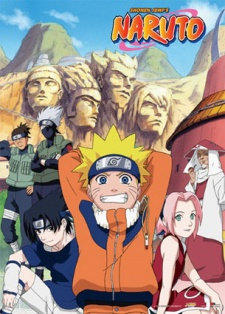
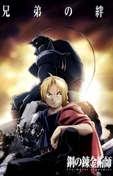

| Popular Anime Today |
| Death Note |

|
Light Yagami is a bored young genius who resents everything and anything evil.
His life changes one day when the shinigami (Death God), Ryuk, "accidentally" drops his Notebook,
in which when a human's name is written they die. Ryuk then lends Light his notebook to spice up his life because he too was bored.
Light then decides to create a utopia free of criminals and all evil.
That's when he crosses paths with the legendary detective "L" who is trying to stop him.
|
| Sword Art Online |

|
Sword Art Online is a Virtual Reality Massiely Multiplayer Online Role-Playing Game (VRMMORPG) it has the release date f 2022.
It uses a virtual reality helmet which stimulates all five senses via a person's brain, so players can actually experience the game with their minds and senses.
On November 6,2022players log into their SAO for the first time and discover they are not able to log-out and can only escape this virtual reality is to reach the 100th floor of the game's tower and defeat the final boss.
However if they die in-game they'll also die in the real world. Kazuto "Kirito" Kirigaya is one of the beta-testers and is trying to get out of the game alive.
Teaming up with others he journeys on to get out of this in-game reality.
|
| Attack on Titan |
|
Over 100 years before the beginning of the story, giant humaoid creatures called Titans suddenly appeared and nearly wiped out humanity, devouring them without remorse or reason.
What remains of humanity lives surrounded by three enourmous concentric walls: the outermost is Wall Maria; the middle is Wall Rose and the innermost is Wall Sina.
Inside these walls humanity lived in peace for the past hundered years, many peple growing up without ever seeing a Titan.
One day this all changes when a 60-meter tall Titan mysteriously appears and destroys a part of Wall Maria leaving all those people in danger and the Titans have a feast.
Then Eren Yeager's life is turned upside-down when the last image of his mother is of her being eaten by a gruesome-looking Titan.
|
| Naruto |

|
Twelve years before the start of the series, the Nine-Tails attacked Konohagakure destroying much of the village and taking many lives.
The leader of the village, the Fourth Hokage sacrificed his life to seal the Nine-Tails into a newborn, Naruto Uzumaki.
Orphaned by the attack, Naruto was shunned by the villagers, who out of fear and anger, viewed him as the Nine-Tails itself.
Though the Third Hokage outlawed speaking about anything related to the Nine-Tails, the children — taking their cues from their parents — inherited the same animosity towards Naruto.
In his thirst to be acknowledged, Naruto vowed he would one day become the greatest Hokage the village had ever seen.
|
| Fullmetal Alchemist: Brotherhood |

|
Edward and Alphonse, on their perilous journey in search of the legendary "Philosopher's Stone".
They set forth hoping that the magical artifact can restore their bodies after a failed attempt to revive their dead mother cost Edward his left leg and right arm,
while Alphonse's entire body was taken away leaving his soul affixed to a suit of armor.
|